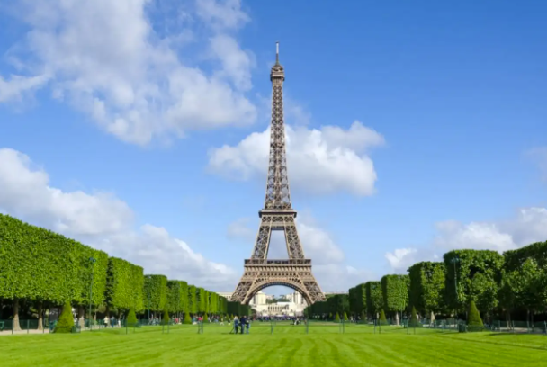

Scale mode of the Eiffel tower in Pare Mini-France
Tháp Eiffel (tiếng Pháp: Tour Eiffel) là một công trình kiến trúc bằng thép nằm trên công viên Champ-de-Mars,
cạnh sông Seine, thủ đô Paris nước Pháp. Vốn có tên nguyên thủy là Tháp 300 mét (Tour de 300 mètres), công trình
này do kỹ sư Gustave Eiffel và các đồng nghiệp của mình thiết kế và xây dựng từ năm 1887 tới năm 1889 nhân dịp
triển lãm thế giới năm 1889, và cũng là dịp kỷ niệm 100 năm Cách mạng Pháp.
Chiều cao nguyên bản của công trình là 300 mét nếu theo đúng thiết kế, nhưng cột ăng ten radio kỹ thuật số mới
trên đỉnh đã giúp tháp Eiffel đạt tới độ cao 325 mét. Từ khi khánh thành vào năm 1889, tháp Eiffel là công trình
cao nhất thế giới và giữ vững vị trí này trong suốt hơn 40 năm. Ngay từ đầu, ngoài chức năng để du lịch, tháp
Eiffel còn được sử dụng cho các mục đích của ngành khoa học. Ngày nay, tháp tiếp tục là một trạm phát sóng truyền
thanh và truyền hình cho vùng đô thị Paris.
Trở thành biểu tượng của "kinh đô ánh sáng", tháp Eiffel là một trong những công trình kiến trúc nổi tiếng nhất
toàn cầu. Từ khi khánh thành cho tới năm 2007, tháp đã có hơn 236 triệu lượt khách viếng thăm. Riêng năm 2007,
tháp Eiffel đã đón tiếp gần 7 triệu du khách, giữ vững vị trí công trình thu phí thu hút nhất trên thế giới.[11]
Tháp Eiffel vốn được thiết kế để làm "cái đinh của Triển lãm thế giới năm 1889 tại Paris", phô trương những công
nghệ xây dựng của Pháp. Vào thời kỳ đầu, công trình đã gây ra những tranh cãi về vẻ thẩm mỹ, công năng... Tuy vậy,
tháp Eiffel vẫn giành được thành công nhanh chóng, trở thành địa điểm thu hút du khách bậc nhất và con số dần ổn
định từ những năm 1960[12].
Địa chỉ chính thức của tháp Eiffel ở số 5 đại lộ Anatole France, Quận 7, Paris. Nằm bên sông Seine, tháp Eiffel
thuộc đường thẳng bắt đầu từ Palais de Chaillot, qua vườn Trocadéro và sông, tới Eiffel rồi chạy dọc Champ-de-Mars,
đến École Militaire và gần như thẳng tiếp tới tháp Montparnasse. Đây đều là các công trình nổi tiếng của Paris,
được hoàn thành trong những giai đoạn khác nhau. Sân của Palais de Chaillot, bên cạnh quảng trường Trocadéro, là
địa điểm lý tưởng nhất để ngắm nhìn tháp.
Ngay sau Triển lãm thế giới năm 1889, tháp Eiffel đã thuộc sở hữu của thành phố Paris. Hiện nay công trình do
Công ty khai thác tháp Eiffel (Société d'exploitation de la tour Eiffel - SETE) quản lý. Với ba tầng sàn, không
gian của tháp Eiffel được chia cho nhiều dịch vụ khác nhau. Ngoài hai nhà hàng Altitude 95 và Le Jules-Verne nằm
ở tầng hai và ba, tháp còn có các hiệu ăn nhanh, phòng trưng bày, cửa hàng lưu niệm, điểm truy cập Internet, cửa
hàng bán các con tem kỷ niệm của Pháp... Tổng cộng, tháp Eiffel cần đến khoảng 500 nhân viên, gồm 250 người thuộc
SETE và 250 nhân viên cho các dịch vụ còn lại[13]. Đón tiếp khách du lịch đến từ mọi quốc gia, tháp Eiffel mở cửa
tất cả các ngày trong năm, từ 9 giờ tới 24 giờ trong khoảng 13 tháng 6 tới 31 tháng 8 và 9 giờ 30 tới 23 giờ trong
khoảng thời gian còn lại của năm[14].
Bốn chân của tháp Eiffel tạo thành một hình vuông lớn có cạnh 125 mét, theo đúng với đăng ký tại cuộc thi năm 1886.
Chiều cao 325 mét với 116 ăng ten, nền tháp Eiffel nằm ở độ cao 33,5 mét so với mực nước biển.
Móng: Hai cột trụ phía École Militaire nằm trên một lớp bê tông dày 2 mét, bên dưới còn một lớp sỏi. Chiều sâu
của móng là 7 mét. Hai cột trụ phía sông Seine cũng tương tự và nằm dưới mức nước của sông. Các công nhân đã phải
làm việc trong những ket-xon – giếng chìm hơi ép – bằng kim loại bịt kín. Mười sáu khối móng chống đỡ cho mỗi chân
tháp và các bu lông mỏ neo lớn bằng thép dài 7,80 mét cố định cho các trụ.
Chân tháp: Mỗi chân tháp mang hình vuông, nằm ở bốn góc hình vuông lớn. Nền của các trụ này là những bệ bê tông
cao 4 mét, cạnh 25 mét. Ngày nay, các quầy bán vé nằm ở các chân phía Bắc và Tây, mỗi năm tiêu thụ 2 tấn giấy vé.
Cầu thang máy đặt ở các chân phía Đông và Tây, khoảng tám phút một chuyến. Còn cầu thang bộ nằm ở chân tháp phía
Đông, gồm 1.665 bậc lên tới đỉnh nhưng chỉ mở cho công chúng lên tới tầng ba. Ở chân tháp phía Nam còn có một cầu
thang máy dành riêng cho nhân viên và khách của nhà hàng Le Jules-Verne trên tầng hai.
Vòng cung: Được đỡ bởi bốn trụ, các vòng cung này ở độ cao 39 mét so với mặt đất và có đường kính 74 mét. Theo bản
vẽ ban đầu của Stephen Sauvestre, phần vòm cung còn được trang trí cầu kỳ. Đối với công trình, vòm cung này có
chức năng thẩm mỹ và giúp chân tháp vững chắc[16].